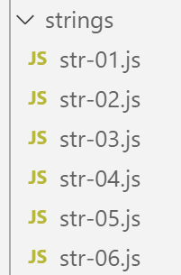
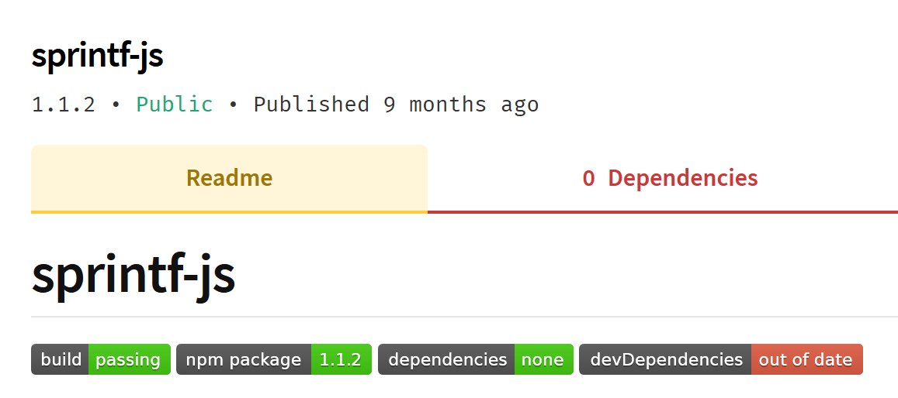
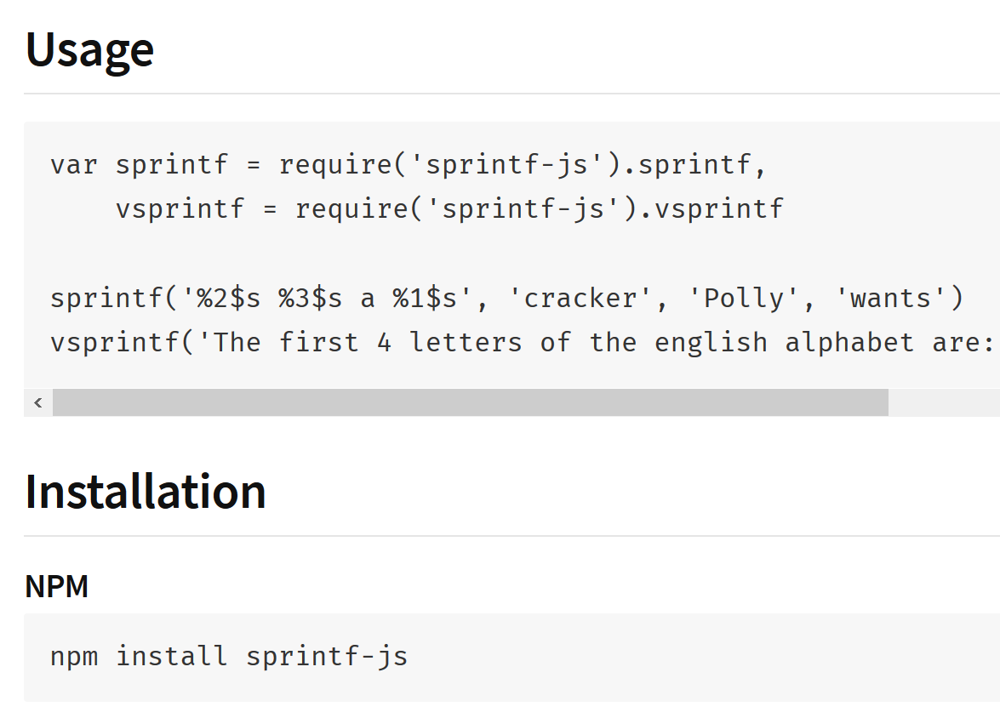
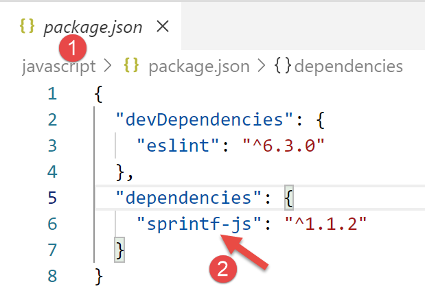

6. السلاسل
تشبه سلاسل JavaScript إلى حد كبير تلك الموجودة في PHP.

6.1. نص برمجي [str-01]
أول شيء يجب فهمه هو أنه بمجرد إنشاء سلسلة، لا يمكن تعديلها بعد ذلك. هناك العديد من الطرق المتاحة لإنشاء سلسلة جديدة من السلسلة الأصلية، لكن السلسلة الأصلية تظل دون تغيير. علاوة على ذلك، يمكن أن تكون السلسلة من نوعين:
- [string] عندما يتم تهيئتها بقيمة نصية ثابتة؛
- [object] عندما يتم إنشاؤها كمثيل لفئة [String]؛
'use strict';
// strings are read-only (cannot be modified)
// a chain
const chaîne1 = "abcd ";
// type
console.log("typeof(chaîne1)=", typeof (chaîne1));
// character n° 2
console.log("chaîne1[2]=", chaîne1[2]);
// causes an error
chaîne1[2] = "0";
التنفيذ
[Running] C:\myprograms\laragon-lite\bin\nodejs\node-v10\node.exe -r esm "c:\Temp\19-09-01\javascript\strings\str-01.js"
typeof(chaîne1)= string
chaîne1[2]= c
c:\Temp\19-09-01\javascript\strings\str-01.js:1
TypeError: Cannot assign to read only property '2' of string 'abcd '
at Object.<anonymous> (c:\Temp\19-09-01\javascript\strings\str-01.js:12:12)
at Generator.next (<anonymous>)
6.2. نص برمجي [str-02]
يوضح هذا البرنامج النصي أنه يمكن إنشاء سلسلة بطريقتين.
'use strict';
// strings can be of two types
// a literal string
const chaîne1 = "abcd ";
// type
console.log("typeof(chaîne1)=", typeof (chaîne1));
// string instance
const chaîne2 = new String("xyzt");
// type
console.log("typeof(chaîne2)=", typeof (chaîne2));
// other entry (without new) - type [string] not [object]
const chaîne3 = String("12 34");
// type
console.log("typeof(chaîne3)=", typeof (chaîne3));
// type [string] and type [object] offer the same methods, those of the String class
console.log("chaîne1.length=", chaîne1.length);
console.log("chaîne2.length=", chaîne2.length);
تعليقات
- السطر 6: الطريقة القياسية لتعريف سلسلة. سيكون [string1] من النوع [string]؛
- السطر 10: يمكن إنشاء سلسلة باستخدام منشئ فئة [String]. سيكون [string2] من النوع [object]؛
التنفيذ
[Running] C:\myprograms\laragon-lite\bin\nodejs\node-v10\node.exe "c:\Temp\19-09-01\javascript\strings\str-02.js"
typeof(chaîne1)= string
typeof(chaîne2)= object
typeof(chaîne3)= string
chaîne1.length= 5
chaîne2.length= 4
يستفيد النوع [string] من أساليب فئة [String].
6.3. نص برمجي [str-03]
يعرض هذا البرنامج النصي سلسلة معينة باستخدام الاستيفاء المتغير.
'use strict';
// chain
const chaîne = "Introduction à Javascript par l'exemple";
// chain with variable interpolation
const str = `[${chaîne}].substr(3, 2)=` + chaîne.substr(3, 2)
console.log(str);
تعليقات
- السطر 6: من الممكن أن تحتوي السلاسل على تعبيرات ${variable} التي يتم استبدالها بقيمة المتغير. وهذا يتبع نفس منطق متغيرات $ في سلاسل PHP. لاحظ صيغة مثل هذه السلسلة: فهي محاطة بعلامات اقتباس مائلة (AltGr-7 على لوحة المفاتيح الفرنسية)؛
التنفيذ
[Running] C:\myprograms\laragon-lite\bin\nodejs\node-v10\node.exe -r esm "c:\Temp\19-09-01\javascript\strings\tempCodeRunnerFile.js"
[Introduction à Javascript par l'exemple].substr(3, 2)=ro
6.4. نص برمجي [str-04]
لا تزال السلسلة التي تحتوي على استيفاء متغير غير كافية. لا يمكن استبدال المتغير في تعبير ${variable} بتعبير آخر. بالنسبة لأولئك الذين برمجوا بلغة C، لا يوجد ما يضاهي وظائف [printf، sprintf] لكتابة أو إنشاء سلاسل منسقة. أنشأ مئات المطورين آلاف حزم JavaScript، مما شكل نظامًا بيئيًا واسعًا. عندما تكون لديك حاجة لا تلبيها JavaScript أصلاً، فقد حان الوقت للبحث عن حزمة تلبيها. للقيام بذلك، نستخدم مدير الحزم [npm]. يحتوي على خيار [search] الذي يسمح لك بالبحث عن سلسلة داخل أوصاف الحزم. يعرض [npm] قائمة بالحزم المطابقة للبحث. لذلك سنبحث عن السلسلة [sprintf] في أوصاف الحزم:

- في العمود [4]، الكلمات الرئيسية للحزم في العمود [3]؛
- في العمود [5]، أوصاف الحزم الموجودة في العمود [3]؛
الخطوة التالية هي الانتقال إلى موقع [npm]، [https://www.npmjs.com/]، وقراءة أوصاف الحزم:

في [3]، نراجع قائمة الحزم ونختار واحدة منها.

في وصف الحزمة، ستجد تعليمات لتثبيتها واستخدامها:

نقوم بتثبيت حزمة [sprintf-js] في محطة [VSCode]:

سيؤدي هذا التثبيت إلى تعديل ملف [package.json] الموجود في جذر مجلد [javascript] [2]:

كما هو موضح أعلاه، تم تثبيت الحزمة في [dependencies]، أي الحزم المطلوبة لتشغيل المشروع. تذكر أن الحزم المطلوبة فقط أثناء تطوير المشروع توضع في [devDependencies]. ولا يتم استخدامها أثناء وقت التشغيل. هذا التمييز مهم عند إنشاء النسخة النهائية من المشروع لنشره في بيئة الإنتاج. تتوفر أدوات للقيام بما يلي:
- دمج جميع ملفات JavaScript المطلوبة للتنفيذ في ملف واحد. وبالتالي، لا يتم تضمين الحزم الموجودة في [devDependencies] في هذا الملف النهائي؛
- تصغيره، أي تقليل حجمه قدر الإمكان. للقيام بذلك، على سبيل المثال، تتم إزالة جميع التعليقات؛
- "تشويش" الكود لجعله صعب الفهم. على سبيل المثال، سيتم استبدال المتغيرات rate و salary و tax بالمتغيرات a و b و c؛
- إجراء تحسينات أخرى؛
يُستخدم هذا التحسين للملف النهائي لمشروع JavaScript في برمجة الويب. قد يعتمد تطبيق الويب على عدد كبير من ملفات JavaScript. قد يؤدي تحميل هذه الملفات في المتصفح إلى إبطاء عرض الصفحة الأولى للتطبيق. يهدف التحسين الموصوف أعلاه إلى تحسين وقت التحميل هذا. إذا وجد المستخدمون أن وقت التحميل طويل جدًا، فلن يتم استخدام التطبيق.
الآن بعد أن أصبح لدينا حزمة [sprintf-js]، نحتاج إلى استخدامها. هذا هو البرنامج النصي [str-04]:
'use strict';
// use of an external package to provide the sprintf function
import { sprintf } from 'sprintf-js';
// chain
const chaîne = "Introduction à Javascript par l'exemple";
// method
console.log(sprintf("[%s].substr(3,2)=[%s]", chaîne, chaîne.substr(3, 2)));
مع ECMAScript 6، نستخدم الكلمة الرئيسية [import] لاستيراد كائن تم تصديره بواسطة حزمة. لمعرفة ما تصدره الحزمة، يمكنك الاطلاع على كودها:

- في [1]، انقر بزر الماوس الأيمن على الحزمة المستوردة؛
- في [2]، نريد رؤية تعريفها؛
- في [3-4]، نرى أن الحزمة تصدر دالة تسمى [sprintf]؛
يتم استيراد الدالة [sprintf] من الحزمة [sprintf-js] باستخدام العبارة التالية:
import { sprintf } from 'sprintf-js';
الكود الكامل:
'use strict';
// use of an external package to provide the sprintf function
import { sprintf } from 'sprintf-js';
// chain
const chaîne = "Introduction à Javascript par l'exemple";
// method
console.log(sprintf("[%s].substr(3,2)=[%s]", chaîne, chaîne.substr(3, 2)));
ينتج النتائج التالية:
[Running] C:\myprograms\laragon-lite\bin\nodejs\node-v10\node.exe "c:\Temp\19-09-01\javascript\strings\str-04.js"
c:\Temp\19-09-01\javascript\strings\str-04.js:3
import { sprintf } from 'sprintf-js';
^
SyntaxError: Unexpected token {
at new Script (vm.js:79:7)
at createScript (vm.js:251:10)
at Object.runInThisContext (vm.js:303:10)
at Module._compile (internal/modules/cjs/loader.js:657:28)
السطر 3: لم يتم التعرف على عبارة [import]. ويرجع ذلك إلى أن الإصدار 10.15.1 من [node.js] المستخدم في هذه الدورة (سبتمبر 2019) لا يدعم بعد معيار ECMAScript لاستيراد الحزم التي تسمى الوحدات النمطية. في عام 2019، يدعم [node.js] معيار وحدة نمطية يُسمى CommonJS. ومن المقرر أن يتم دمج وحدات ECMAScript بواسطة [node.js] في عام 2020. ومرة أخرى، بادر المطورون بإنشاء حزم تسمح باستخدام وحدات ES6 مع [node.js] في الوقت الحالي (2019).
سنستخدم حزمة تسمى [esm] (ECMAScript Modules). نقوم بتثبيتها في محطة طرفية لمشروع [javascript]:

في [4]، يمكننا أن نرى أن تثبيت حزمة [esm] [1-3] قد أدى إلى تعديل ملف [javascript/package.json].
لم ننتهِ بعد. لكي يتم استخدام وحدة [esm] بواسطة [node.js]، نحتاج إلى تشغيلها باستخدام الوسيطة [-r esm].
لذلك نقوم بتعديل إعدادات ملحق [Code Runner] في [VSCode]:


في [11]، نضيف الحجة [-r esm] ونحفظ (Ctrl-S) الإعدادات.
الآن يمكننا تشغيل البرنامج النصي [str-04]:
'use strict';
// use of an external package to provide the sprintf function
import { sprintf } from 'sprintf-js';
// chain
const chaîne = "Introduction à Javascript par l'exemple";
// substr method
console.log(sprintf("[%s].substr(3,2)=[%s]", chaîne, chaîne.substr(3, 2)));

6.5. script [str-05]
فيما يلي ما تقوله الوثائق عن دالة [sprintf]:
يتم تمييز العناصر النائبة في سلسلة التنسيق بعلامة % وتليها واحد أو أكثر من هذه العناصر، بالترتيب التالي:
- رقم اختياري يتبعه علامة $ تحدد مؤشر الحجة الذي سيُستخدم للقيمة. إذا لم يتم تحديده، فسيتم وضع الحجج بنفس ترتيب العناصر النائبة في سلسلة الإدخال.
- علامة + اختيارية تفرض أن يسبق النتيجة علامة زائد أو ناقص للقيم الرقمية. بشكل افتراضي، تُستخدم علامة - فقط للأرقام السالبة.
- محدد حشو اختياري يحدد الحرف الذي سيتم استخدامه للحشو (إذا تم تحديده). القيم الممكنة هي 0 أو أي حرف آخر يسبقه ' (علامة اقتباس مفردة). الإعداد الافتراضي هو الحشو بمسافات.
- علامة - اختيارية تجعل sprintf تقوم بمحاذاة نتيجة هذا العنصر النائب إلى اليسار. الإعداد الافتراضي هو محاذاة النتيجة إلى اليمين.
- رقم اختياري يحدد عدد الأحرف التي يجب أن تحتوي عليها النتيجة. إذا كانت القيمة المراد إرجاعها أقصر من هذا الرقم، فسيتم ملء الفراغات. عند استخدامه مع محدد النوع j (JSON)، يحدد طول الملء حجم علامة الجدولة المستخدمة للتبويب.
- معدل دقة اختياري، يتكون من . (نقطة) متبوعة برقم، يحدد عدد الأرقام التي يجب عرضها للأرقام العائمة. عند استخدامه مع محدد النوع g، فإنه يحدد عدد الأرقام ذات الأهمية. عند استخدامه على سلسلة، فإنه يؤدي إلى اقتطاع النتيجة.
- محدد نوع يمكن أن يكون أيًا مما يلي:
- % — ينتج حرف % حرفي
- b — تُنتج عددًا صحيحًا كرقم ثنائي
- c — ينتج عددًا صحيحًا كحرف بقيمة ASCII تلك
- d أو i — ينتج عددًا صحيحًا كرقم عشري موقّع
- e — ينتج عددًا عائمًا باستخدام الترميز العلمي
- u — ينتج عددًا صحيحًا كرقم عشري غير موقّع
- f — يُرجع عددًا عائمًا كما هو؛ انظر الملاحظات حول الدقة أعلاه
- g — تُرجع عددًا عائمًا كما هو؛ انظر الملاحظات حول الدقة أعلاه
- o — تُرجع عددًا صحيحًا كرقم ثماني
- s — تُرجع سلسلة نصية كما هي
- t — تُرجع صحيح أو خطأ
- T — تُرجع نوع الحجة 1
- v — يُرجع القيمة الأولية للحجة المحددة
- x — يُرجع عددًا صحيحًا كرقم سداسي عشري (بالأحرف الصغيرة)
- X — يُنتج عددًا صحيحًا كرقم سداسي عشري (بالأحرف الكبيرة)
- j — يُرجع كائن JavaScript أو مصفوفة كسلسلة مشفرة بتنسيق JSON
ينفذ البرنامج النصي [script-05] بعض هذه التنسيقات:
'use strict';
// use of an external package to provide the sprintf function
import { sprintf } from 'sprintf-js';
// chain
const chaîne = "Javascript";
// character strings
console.log(sprintf("[%s, %%s]=>[%s]", chaîne, chaîne));
console.log(sprintf("[%s, %%20s]=>[%20s]", chaîne, chaîne));
console.log(sprintf("[%s, %%-20s]=>[%-20s]", chaîne, chaîne));
// integers
console.log(sprintf("[%d, %%d]=>[%d]", 10, 10));
console.log(sprintf("[%d, %%4d]=>[%4d]", 10, 10));
console.log(sprintf("[%d, %%-4d]=>[%-4d]", 10, 10));
console.log(sprintf("[%d, %%04d]=>[%04d]", 10, 10));
// real
console.log(sprintf("[%f, %%f]=>[%f]", -10.5, -10.5));
console.log(sprintf("[%f, %%10.2f]=>[%10.2f]", -10.5, -10.5));
console.log(sprintf("[%f, %%-10.2f]=>[%-10.2f]", -10.5, -10.5));
console.log(sprintf("[%f, %%010.3f]=>[%010.3f]", -10.5, -10.5));
// json
console.log(sprintf("personne (%%j)=%j", { nom: "mathieu", âge: 34 }));
// type
console.log(sprintf("type personne (%%T)=%T", { nom: "mathieu", âge: 34 }));
// boolean
console.log(sprintf("booléen (%%t)=%t", 4 === 4));
التنفيذ
[Running] C:\myprograms\laragon-lite\bin\nodejs\node-v10\node.exe -r esm "c:\Data\st-2019\dev\es6\javascript\strings\str-05.js"
[Javascript, %s]=>[Javascript]
[Javascript, %20s]=>[ Javascript]
[Javascript, %-20s]=>[Javascript ]
[10, %d]=>[10]
[10, %4d]=>[ 10]
[10, %-4d]=>[10 ]
[10, %04d]=>[0010]
[-10.5, %f]=>[-10.5]
[-10.5, %10.2f]=>[ -10.50]
[-10.5, %-10.2f]=>[-10.50 ]
[-10.5, %010.3f]=>[-00010.500]
personne (%j)={"nom":"mathieu","âge":34}
type personne (%T)=object
booléen (%t)=true
6.6. نص برمجي [str-06]
يوضح البرنامج النصي [str-06] بعض طرق فئة [String] التي يمكن استخدامها أيضًا في النوع [string]:
'use strict';
// use of an external package to provide the sprintf function
import { sprintf } from 'sprintf-js';
// chain
const chaîne = " Introduction à Javascript ";
// a few methods
// substr(10,2): 2 characters starting from number 10
console.log(sprintf("[%s].substr(10,2)=[%s]", chaîne, chaîne.substr(10, 2)));
// trim: eliminates blanks at the beginning and end of a chain (blank=b \t \r \n \f)
console.log(sprintf("[%s].trim()=[%s]", chaîne, chaîne.trim()));
// toLowerCase: transformation to lower case
console.log(sprintf("[%s].toLowerCase=[%s]", chaîne, chaîne.toLowerCase()));
// toUpperCase: transformation into uppercase letters
console.log(sprintf("[%s].toUpperCase=[%s]", chaîne, chaîne.toUpperCase()));
// indexOf: position of a searched string within the string, -1 if the substring doesn't exist
console.log(sprintf("[%s].indexOf('Java')=[%s]", chaîne, chaîne.indexOf('Java')));
console.log(sprintf("[%s].trim().indexOf('abcd')=[%s]", chaîne, chaîne.indexOf('abcd')));
// includes: true if the string searched for is in the string
console.log(sprintf("[%s].includes('Java')=[%s]", chaîne, chaîne.includes('Java')));
// length: string length - not a method but a property
console.log(sprintf("[%s].length=[%s]", chaîne, chaîne.length));
// slice (7,10): strings of characters 7 to 9
console.log(sprintf("[%s].slice(7,10)=[%s]", chaîne, chaîne.slice(7, 10)));
// match: searches for an expression in the string - this expression can be a regular expression
// /intro/i: regular expression designating the string [intro] in upper or lower case
// returns the string found
console.log(sprintf("[%s].match(/intro/i)=[%s]", chaîne, chaîne.match(/intro/i)));
// replace: replaces string1 with string2 in string
// replaces the 1st occurrence of i with x
console.log(sprintf("[%s].replace('i','x')=[%s]", chaîne, chaîne.replace('i', 'x')));
// replaces all occurrences of i with x
// /i/g is a regular expression designating all (g) occurrences of i
console.log(sprintf("[%s].replace(/i/g,'x')=[%s]", chaîne, chaîne.replace(/i/g, 'x')));
// split: splits the string into words separated by the split parameter
// renders the table of these words
// /\s*/ : words separated by 0 or more spaces
console.log(sprintf("[%s].split(/\\s*/)=[%s]", chaîne, chaîne.split(/\s*/)));
// /\s+/ : words separated by one or more spaces
console.log(sprintf("[%s].split(/\\s+/)=[%s]", chaîne, chaîne.split(/\s+/)));
التنفيذ
[Running] C:\myprograms\laragon-lite\bin\nodejs\node-v10\node.exe -r esm "c:\Data\st-2019\dev\es6\javascript\strings\str-06.js"
[ Introduction à Javascript ].substr(10,2)=[ti]
[ Introduction à Javascript ].trim()=[Introduction à Javascript]
[ Introduction à Javascript ].toLowerCase=[ introduction à javascript ]
[ Introduction à Javascript ].toUpperCase=[ INTRODUCTION À JAVASCRIPT ]
[ Introduction à Javascript ].indexOf('Java')=[17]
[ Introduction à Javascript ].trim().indexOf('abcd')=[-1]
[ Introduction à Javascript ].includes('Java')=[true]
[ Introduction à Javascript ].length=[28]
[ Introduction à Javascript ].slice(7,10)=[duc]
[ Introduction à Javascript ].match(/intro/i)=[Intro]
[ Introduction à Javascript ].replace('i','x')=[ Introductxon à Javascript ]
[ Introduction à Javascript ].replace(/i/g,'x')=[ Introductxon à Javascrxpt ]
[ Introduction à Javascript ].split(/\s*/)=[,I,n,t,r,o,d,u,c,t,i,o,n,à,J,a,v,a,s,c,r,i,p,t,]
[ Introduction à Javascript ].split(/\s+/)=[,Introduction,à,Javascript,]